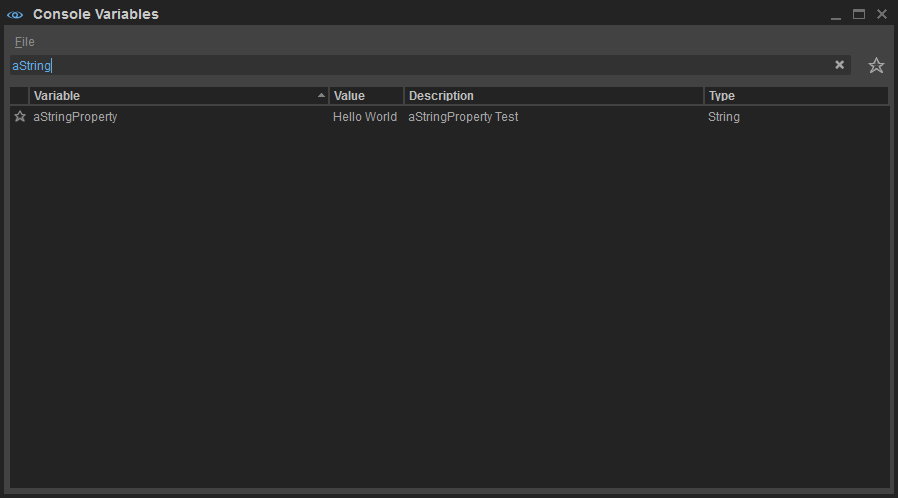

Создание переменных консоли
Переменные консоли можно объявлять в C# с помощью свойств и атрибутов. В настоящее время можно объявить четыре типа атрибутов (с соответствующими свойствами).
Типы атрибутов и свойств перечислены в таблице ниже:
| Тип атрибута | Тип недвижимости | Описание |
|---|---|---|
| ConsoleVariableFloatAttribute | ConsoleVariableAttributeFloatProperty | Тип с плавающей запятой |
| ConsoleVariableIntegerAttribute | ConsoleVariableAttributeIntegerProperty | 32-битный целочисленный тип |
| ConsoleVariableInteger64Attribute | ConsoleVariableAttributeInteger64Property | 64-битный целочисленный тип |
| ConsoleVariableStringAttribute | ConsoleVariableAttributeStringProperty | Тип строки |
Существует два метода создания консольных переменных в C#:
- Применение атрибутов C#.
- Ручная инициализация и деинициализация.
Применение атрибутов C#
Обратите внимание, что каждому свойству переменной консоли необходимо сопоставить правильный атрибут, а затем инициализировать.
Например,
[ConsoleVariableString("aStringProperty", "Hello World", (uint)EVarFlags.VF_DEV_ONLY, "aStringProperty Test")]
public static ConsoleVariableAttributeStringProperty aStringProperty = new ConsoleVariableAttributeStringProperty();Строковая консольная переменная с именем aStringProperty объявляется и инициализируется. Если переменная консоли меняет значение в собственном коде C++, aStringProperty также будет изменено, и наоборот. Также обратите внимание, что оба ConsoleVariableString и ConsoleVariableAttributeStringProperty должно быть то же самое.
Только свойство static можно объявить как консольную переменную с атрибутами.
Если создание прошло успешно, вы сможете увидеть следующую опцию в редакторе Sandbox («Справка->»Консольные переменные»).

Ручная инициализация и деинициализация
Консольные переменные также можно создавать в коде:
public class MyConsoleVariables
{
public ConsoleVariableAttributeIntegerProperty testInt;
public MyConsoleVariables()
{
testInt = ConsoleVariableAttributeManager.CreateConsoleVariableIntegerProperty("an_int", int.MaxValue, "This is dynamic", (uint)EVarFlags.VF_CHEAT);
}
public void clearResources()
{
testInt.Dispose();
testInt = null;
}
}В приведенном выше примере кода целочисленная консольная переменная, отличная от static, объявлена и инициализирована в классе. Когда переменная консоли больше не используется, она удаляется и освобождается.
Все свойства переменных консоли реализуют IDisposable и должны удаляться, когда они не используются.
Обработка ошибок
А ConsoleCommandConfigurationException будет выброшено, если есть какие-либо неправильные конфигурации.
Существует два типа ошибок конфигурации:
- Неинициализированное свойство консольной переменной static.
- Несоответствие между атрибутом и свойством переменной консоли.
Неинициализированное свойство статической переменной консоли
[ConsoleVariableString("aStringProperty", "Hello World", (uint)EVarFlags.VF_DEV_ONLY, "This is null")]
public static ConsoleVariableAttributeStringProperty aStringProperty ; // this is nullВ приведенном выше примере aStringProperty имеет значение null и не инициализировано.
Несоответствие между атрибутом переменной консоли и свойством
[ConsoleVariableString("aStringProperty", testStringPropertyWronglyValue, (uint)EVarFlags.VF_DEV_ONLY, "String attribute mismatched with float property")]
public static ConsoleVariableAttributeFloatProperty aWrongProperty = new ConsoleVariableAttributeFloatProperty();В приведенном выше ConsoleVariableString атрибут (тип строки) используется с неверным свойством ConsoleVariableAttributeFloatProperty (тип с плавающей запятой).